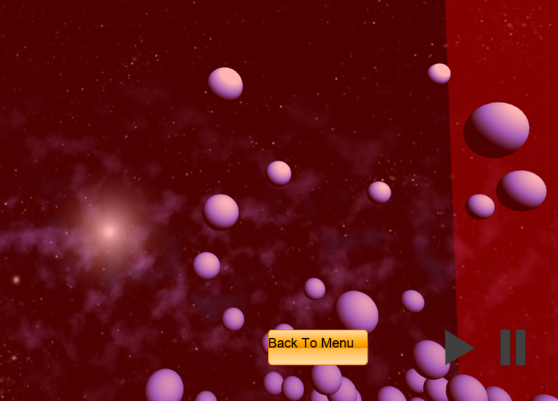

In the first class of COMP477 - Animation for Computer games, the course showed off a simulation of water which caught our attention immediately. Upon the presentation of topics which we could use for our project, we decided to focus on fluid simulation.
Our main motivation for this project was to understand the theory behind fluid dynamics and the challenges of designing such a system. We wanted to apply our knowledge we have acquired in class about Smoothed-Particle Hydrodynamics in order to replicate the look and the feel of the video which was shown in the first day of class.
We believe that this project is a good stepping stone for the development of future projects related to the creation of realistic environments in games or other fields.
Fluid Simulator
Our team created an application which simulates the movement and interaction of rigidbody objects with fluids. The dynamics of the fluid was simulated by using a computational method called Smoothed-Particle Hydrodynamics (SPH). We used C++, OpenMP, and the modern OpenGL library (4.0+) with GLSL shader language to develop the Fluid Simulator.
Features:
- SPH
- Rigidbody physics - Collision Detection and Handling
- Ray Tracing for rendering the surface
- Parallel Programming
- Scene player and Scene editor
- Import and Export of .anim files
- Video capturing (in progress)
Challenges
One of the main difficulties involved in our project were figuring out how to implement SPH and tweaking the parameters to get a nice simulation. We also had difficulty optimizing the code. We did the following to optimize our SPH code:
- Parallelize SPH loops using OpenMP
- Applying symmetry to particle-particle interactions (e.g. pressure, density, gradient, …)
In the end, between the first iteration of our program and the current iteration, we had a speedup factor of 12.
Images of our Engine
The engine allows the user to choose between a selection of modes: Create, Run, or Continue a simulation or Create your own scene Running a simulation of 100k particles  The engine allows the user to pause and play the rendered simulation{kind=link}
Videos
In our editor, the user can create and save the settings of each shape. These settings can be used during the creation of a simulation,
Our editor mode allows us to create basic shapes such as spheres and cubes.Forces - Surface Tension
We implemented surface tension into the calculation of SPH because we wanted to see the differences.
To showcase the differences, we used a volume of 1 meter cube with 250 particles with 15.0 viscosity
First simulation - No Surface Tension
Second simulation - With Surface Tension
At the end of the first simulation (~3 or 4 seconds), we can see that the 'surface' particles bounce a lot more than the second simulation. This result is partly due to the addition of surface tension.
Here was our first 100k particle simulation:
100k particles, with viscosity of 8 with a minor collision handling bugAs you can see in the video, we saw that particles were flying out of the bounds. Hence we tried to fix our collision detection and handling.
100k particles, with viscosity of 6 with a partial fix to the collision detectionWe made a partial fix to the collision detection and handling. We liked the wave formation in the first video but the second video shows a more stable result.
We are planning to continue this project. Hopefully, we can make the simulation happen in real-time!